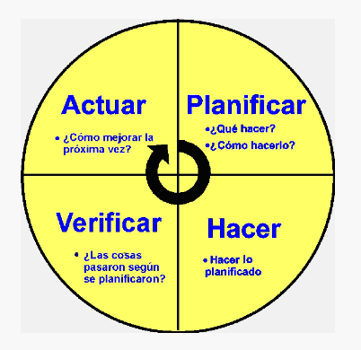
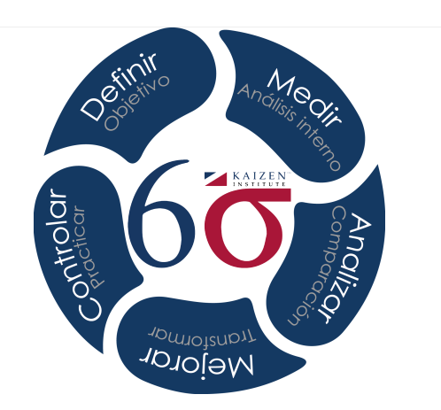
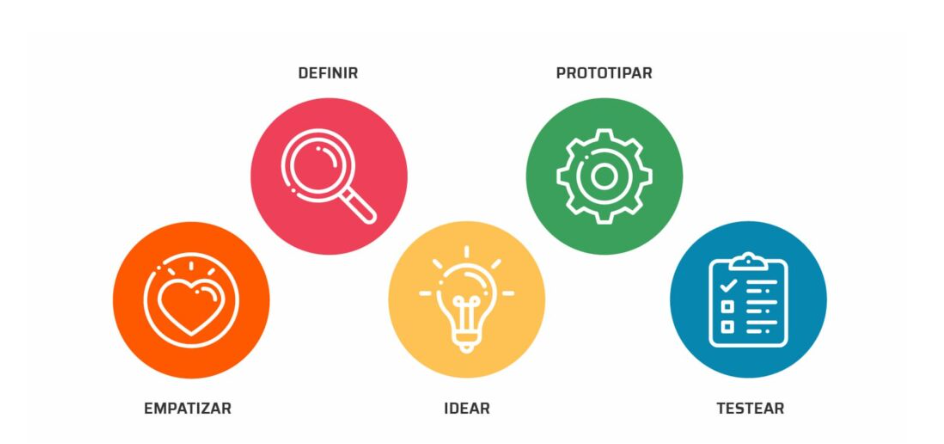
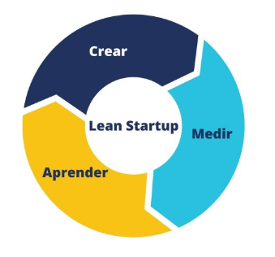

Para el planteamiento de proyectos desde la detección de problemas, hay varias metodologías y enfoques que se pueden emplear. A continuación, se presentan algunas de las metodologías más conocidas:
Como se mencionó anteriormente, el ciclo PHVA es un enfoque efectivo para abordar problemas y proyectos. Comienza identificando el problema en la etapa “Planificar”, desarrollando un plan de acción, implementándolo en la etapa “Hacer”, verificando los resultados y actuando en consecuencia para mejorar. Luego, se repite el ciclo para la mejora continua.

Six Sigma es un enfoque de mejora de procesos que se enfoca en reducir la variabilidad y mejorar la calidad. Se utiliza DMAIC (Definir, Medir, Analizar, Mejorar, Controlar) como una metodología estructurada para abordar problemas y proyectos. Comienza con la definición del problema, la medición de los datos, el análisis de las causas raíz, la implementación de mejoras y el control continuo del proceso. Fué desarrollado por Bill Smith, en 1986.

Design Thinking es una metodología centrada en el usuario que se utiliza para abordar problemas complejos y fomentar la innovación. Se inicia con la empatía hacia los usuarios, la definición del problema, la generación de ideas, la creación de prototipos y pruebas, y la implementación de soluciones.
Esta métodolgía puede ayudar en generación de proyectos de innovación, en la mejora de experiencia del cliente y desarrollo de nuevos productos o servicios, Design Thinking puede ser una excelente elección para entender las necesidades y deseos de los clientes y a diseñar soluciones centradas en el usuario.
Fue creado por Herbert Simon en 1969, popularizado por David Kelley en la década de los noventa.

El enfoque Lean Startup se centra en la creación rápida de prototipos y pruebas de hipótesis para desarrollar un proyecto o producto. Esta metodología fué creado por Eric Ries en 2011. Se inicia con la identificación de un problema, la creación de un producto mínimo viable (MVP), la medición de resultados y el aprendizaje continuo. Este enfoque es especialmente adecuado para proyectos empresariales y startups.
En caso que la entidad tenga como propósito el desarrollar nuevos productos financieros o servicios, Lean Startup es una metodología efectiva. Ayuda a validar rápidamente las ideas y a crear MVPs (Mínimos Productos Viables) para probar en el mercado antes de invertir en el desarrollo completo.

El PMI proporciona un marco de trabajo completo para la gestión de proyectos, que incluye la identificación del problema (iniciación del proyecto), la planificación, la ejecución, el monitoreo y control, y el cierre del proyecto. Este enfoque es ampliamente utilizado en la gestión de proyectos en diversas industrias.
El Modelo Canvas, tambien llamada “Business Model Canvas” es una herramienta que permite definir, visualizar y comunicar aspectos clave de un proyecto o negocio. Ayuda a identificar problemas y oportunidades al enfocarse en segmentos de clientes, propuesta de valor, canales, relaciones con clientes, fuentes de ingresos, recursos clave, actividades clave, socios clave y estructura de costos.
El enfoque que elijas dependerá de la naturaleza del problema, el tipo de proyecto y tus objetivos específicos. Es importante seleccionar la metodología que mejor se adapte a tu situación y asegurarte de seguir un proceso estructurado para abordar los problemas y proyectos de manera efectiva.
Pueden ayudar a identificar las fuentes de ingresos, los segmentos de clientes y las actividades clave necesarias para que un proyecto sea exitoso.
Empareje las siguientes situaciones con la respectiva metodologia:
| 6. Un banco ha detectado un aumento en la tasa de morosidad de los créditos hipotecarios en Colombia durante el último trimestre. El banco quiere reducir la morosidad y mejorar la calidad de su cartera de créditos. –> | a. Ciclo PHVA : El banco puede utilizar el ciclo PHVA para analizar las causas del aumento de la morosidad, implementar medidas para reducirla y evaluar la efectividad de estas medidas. |
| 5. Una empresa de seguros quiere reducir el tiempo que tarda en procesar las reclamaciones de sus clientes. La empresa quiere mejorar la eficiencia de sus operaciones y aumentar la satisfacción de sus clientes. –> | b. Six Sigma: La empresa puede utilizar Six Sigma para identificar los puntos críticos del proceso de procesamiento de reclamaciones, eliminar las actividades innecesarias y reducir la variabilidad del proceso. |
| 4. Una entidad financiera quiere desarrollar un nuevo producto financiero que satisfaga las necesidades de sus clientes millennials. La entidad quiere entender mejor las necesidades de este segmento de mercado y desarrollar un producto innovador que sea atractivo para ellos. –> | c. Design Thinking: La entidad financiera puede utilizar Design Thinking para realizar una investigación profunda de las necesidades de los millennials, generar ideas creativas para nuevos productos financieros y desarrollar prototipos de productos para probar con este segmento de mercado. |
| 3. Una empresa de tecnología financiera quiere lanzar una nueva plataforma de pagos online. La empresa quiere minimizar el riesgo y desarrollar una plataforma que satisfaga las necesidades de sus clientes. –> | d. Lean Startup: La empresa puede utilizar Lean Startup para crear un producto mínimo viable (MVP) de la plataforma de pagos, lanzarlo al mercado y obtener feedback de los clientes. La empresa puede utilizar este feedback para mejorar la plataforma y aumentar sus posibilidades de éxito. |
| 1. Un banco está implementando un nuevo sistema de core bancario. El banco quiere asegurar que el proyecto se complete a tiempo, dentro del presupuesto y con la calidad requerida. –> | e. Project Management Institute: El banco puede utilizar las mejores prácticas del Project Management Institute para gestionar el proyecto de implementación del nuevo sistema core bancario. |
| 2. Una empresa quiere desarrollar un nuevo modelo de negocio para financiar proyectos de emprendimiento. La empresa quiere identificar las oportunidades de mercado y desarrollar un modelo de negocio sostenible. –> | f. Metodología Canvas: La empresa puede utilizar la metodología Canvas para definir la propuesta de valor, el mercado objetivo, los canales de distribución, la estrategia de marketing y la estructura de costes del nuevo modelo de negocio. |